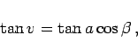
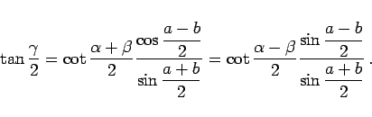

Inhalt Index DeskTop Bronstein

 Geometrie Sphärische Trigonometrie Berechnung sphärischer Dreiecke Schiefwinklig sphärisches Dreieck
Geometrie Sphärische Trigonometrie Berechnung sphärischer Dreiecke Schiefwinklig sphärisches Dreieck


Gegeben: 2 Seiten und der einer Seite gegenüberliegende Winkel, z.B.
Bedingungen: Siehe Fallunterscheidung.

Lösung: Gesucht: beliebige fehlende Größe
| (3.224) |
Zwei Werte sind möglich. Es sei spitz und stumpf.
Fallunterscheidung:
Fortführung: Weitere Berechnung mit einem Winkel oder 2 Winkeln

Dazu wird von C das sphärische Lot auf AB bis D gefällt.
 |
(3.225a) |
|  | (3.225b) |
 |
(3.225c) |
| (3.225d) |
Die Berechnung von  kann auch mit Hilfe des Sinussatzes (3.191d) erfolgen.
kann auch mit Hilfe des Sinussatzes (3.191d) erfolgen.
 |
(3.226a) |
|  | (3.226b) |